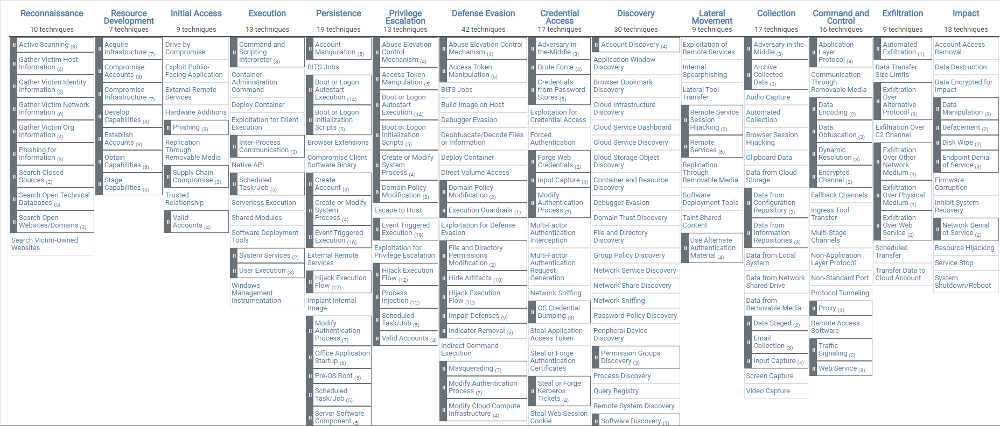

Extensive list found here
• Reconnaissance - The adversary is trying to gather information they can use to plan future operations
◇ consists of techniques that involve adversaries actively or passively gathering information that can be used to support targeting
◇ such information may include details of the victim organization, infrastructure, or staff/personnel
• Resource Development - The adversary is trying to establish resources they can use to support operations
◇ adversaries creating, purchasing, or compromising/stealing resources that can be used to support targeting
◇ resources include infrastructure, accounts, or capabilities.
▪ such as using purchased domains to support Command and Control, email accounts for phishing as a part of Initial Access, or stealing code signing certificates to help with Defense Evasion
• Initial Access - The adversary is trying to get into your network.
◇ techniques that use various entry vectors to gain their initial foothold within a network
▪ include targeted spearphishing and exploiting weaknesses on public-facing web servers
◇ Footholds gained through initial access may allow for continued access, like valid accounts and use of external remote services, or may be limited-use due to changing passwords
• Execution - The adversary is trying to run malicious code
◇ consists of techniques that result in adversary-controlled code running on a local or remote system
◇ Techniques that run malicious code are often paired with techniques from all other tactics to achieve broader goals, like exploring a network or stealing data
▪ For example, an adversary might use a remote access tool to run a PowerShell script that does Remote System Discovery.
• Persistence - The adversary is trying to maintain their foothold
◇ Persistence consists of techniques that adversaries use to keep access to systems across restarts, changed credentials, and other interruptions that could cut off their access
◇ Techniques used for persistence include any access, action, or configuration changes that let them maintain their foothold on systems
▪ such as replacing or hijacking legitimate code or adding startup code
• Privilege Escalation - The adversary is trying to gain higher-level permissions
◇ consists of techniques that adversaries use to gain higher-level permissions on a system or network
◇ Adversaries can often enter and explore a network with unprivileged access but require elevated permissions to follow through on their objectives
◇ Common approaches are to take advantage of system weaknesses, misconfigurations, and vulnerabilities. Examples of elevated access include:
▪ SYSTEM/root level
▪ local administrator
▪ user account with admin-like access
▪ user accounts with access to specific system or perform specific function
◇ These techniques often overlap with Persistence techniques, as OS features that let an adversary persist can execute in an elevated context.
• Defense Evasion
◇